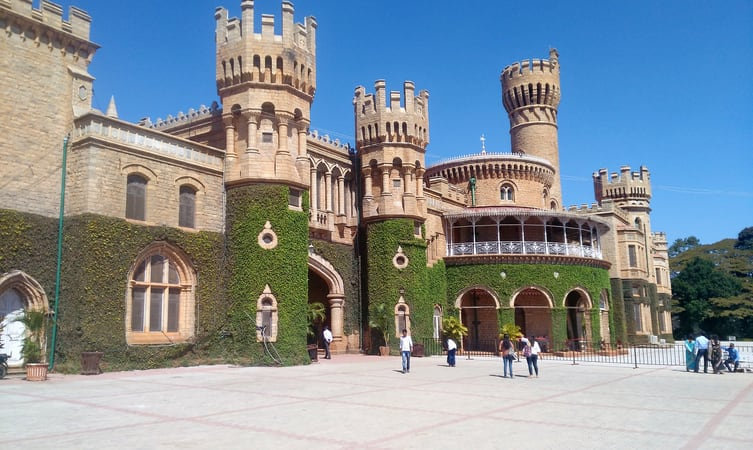

| Bangalore Palace |

Overview
In the technology-driven, futuristic Silicon Valley of India, monuments of historical significance boasting of a glorious past are also abundant. The historical heritage of the city is so magnificent and eminent that it rises to prominence on its own. One such landmark is the Tudor style Bangalore Palace. The Palace is a perfect representation of the lavishness and splendour with which India's most resilient dynasties ruled. Famous for its opulent architecture and amusement activities, the Palace is visited by several visitors every day. The colossal Palace boasts of massive courtyards, bright interiors, kingly grounds, splendid spiral staircases, stately towers and a luscious garden in a proud display of posh regality. Anyone who admires classic architecture and artistry would be delighted to experience it first hand at this Palace. It also houses an amusement park in its enclave to the delight of many younger visitors. Having been a private residence to the Wodeyar family, Bangalore palace offers a linear perspective into the royal life of the forepassed era. It is plush with a vibrant and varied collection of ancient royal artefacts, paraphernalia, hunting trophies and family photos. The Palace houses some of the most famous paintings of the 19th Century, including the works of one of India's most celebrated artists Raja Ravi Verma. The Palace grounds very often become venues for concerts and festivals. World-renowned artists like Enrique and Guns N' Roses have graced the palace grounds with their talent and presence. The Palace hence combines the richness and luxury of royal history with the vivacious and exuberant demeanour of the youth.
Bangalore palace history
 Originally a property of Reverend J Garrett, the principal of a school in the cantonment town at that time, the area where the Palace is now located was purchased from him by the British Guardians of Maharaja Chamarajendra Wadiyar for 40,000 rupees.
The construction of the palace began in the year 1874. Mr John Cameron of Lalbagh was assigned the task of landscaping Palace along with its surroundings. The complete construction of the palace was completed in the year, 1878.
The Palace saw many additions and modifications in its architecture in subsequent years. Maharaja Jayachamaraja Wadiyar added a few portions like the twin external staircase, the platform for musicians etc. outside the Durbar Hall.
In 1970, HH Jayachamarajendra Wodeyar transferred ownership of the property to two companies, Chamundi Hotels and Shree Venkateshwara Real Estate Enterprises. However, this transaction was later shown to be fraudulent.
A legal battle followed between this deal and Jayachamarajendra's son, Srikanta Datta. The five sisters of Srikanta Datta are now in possession of sections of the 28 acres of the Palace.
In the year 1990 Srikant Datta finally compromised with the Chamaraju group and got back his part of the property including the main Palace except for 45 acres that the Chamaraju group still retains.
Originally a property of Reverend J Garrett, the principal of a school in the cantonment town at that time, the area where the Palace is now located was purchased from him by the British Guardians of Maharaja Chamarajendra Wadiyar for 40,000 rupees.
The construction of the palace began in the year 1874. Mr John Cameron of Lalbagh was assigned the task of landscaping Palace along with its surroundings. The complete construction of the palace was completed in the year, 1878.
The Palace saw many additions and modifications in its architecture in subsequent years. Maharaja Jayachamaraja Wadiyar added a few portions like the twin external staircase, the platform for musicians etc. outside the Durbar Hall.
In 1970, HH Jayachamarajendra Wodeyar transferred ownership of the property to two companies, Chamundi Hotels and Shree Venkateshwara Real Estate Enterprises. However, this transaction was later shown to be fraudulent.
A legal battle followed between this deal and Jayachamarajendra's son, Srikanta Datta. The five sisters of Srikanta Datta are now in possession of sections of the 28 acres of the Palace.
In the year 1990 Srikant Datta finally compromised with the Chamaraju group and got back his part of the property including the main Palace except for 45 acres that the Chamaraju group still retains.
Architecture
 The Palace showcases exquisite wooden interiors surrounded by pristine walls. The Palace is enclosed within beautiful gardens.
The architecture is a medley of Tudor style and Scottish style and has gothic undertones. A lot of physical artefacts inside are of British origin.
It is said that the architecture of this building is inspired by that of the Windsor Castle and other architectural marvels of England and Normandy.
The most prominent features of the Palace like the two-level granite structure of the fortified towers and turreted parapets take direct inspiration from the Tudor building styles. The entrance is decorated with grand Roman arches.
The exterior of the building is covered in eccentric shapes and angles. The exterior walls are of a blushing cinnabar shade that gives the building a quaint Victorian vibe.
The floor of the open courtyard of the Palace is adorned with granite seats covered with azure ceramic tiles. The ground floor also contains a beautifully decorated ballroom.
The first floor of the Palace has a distinct chamber known as the Durbar Hall attached to an ornate staircase.
This hall is famous for the enormous elephant head that is mounted in it and its gothic style tinted glass windows.
The Palace showcases exquisite wooden interiors surrounded by pristine walls. The Palace is enclosed within beautiful gardens.
The architecture is a medley of Tudor style and Scottish style and has gothic undertones. A lot of physical artefacts inside are of British origin.
It is said that the architecture of this building is inspired by that of the Windsor Castle and other architectural marvels of England and Normandy.
The most prominent features of the Palace like the two-level granite structure of the fortified towers and turreted parapets take direct inspiration from the Tudor building styles. The entrance is decorated with grand Roman arches.
The exterior of the building is covered in eccentric shapes and angles. The exterior walls are of a blushing cinnabar shade that gives the building a quaint Victorian vibe.
The floor of the open courtyard of the Palace is adorned with granite seats covered with azure ceramic tiles. The ground floor also contains a beautifully decorated ballroom.
The first floor of the Palace has a distinct chamber known as the Durbar Hall attached to an ornate staircase.
This hall is famous for the enormous elephant head that is mounted in it and its gothic style tinted glass windows.